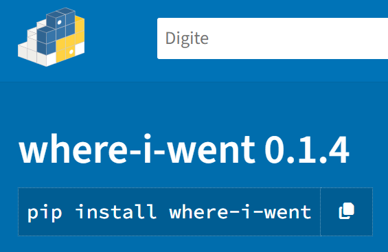
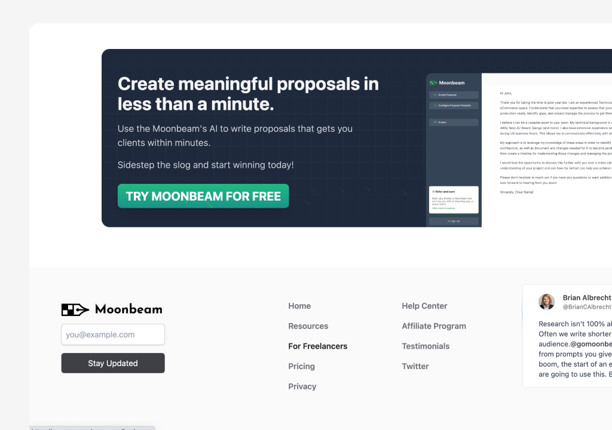

👋
Olá! Bem vindo ao meu espaço.
Meu nome é Julian, sou desenvolvedor de software e hardware embarcado. Eventualemnte escrevo artigos sobre tecnologia, ciência e outros assuntos relacionados.
Tenho experiência com backend, softwares microprocessados e aplicações desktop.
O que eu tenho feito

Where-I-Went Library
biblioteca Python que permite extrair informações de geolocalização de imagens JPEG (ou JPG) e criar mapas interativos com base nesses dados.
Python
C
HTML

Projeto 2 (edite aqui)
Descreva seu projeto em 1-2 frases.
Node
Postgres